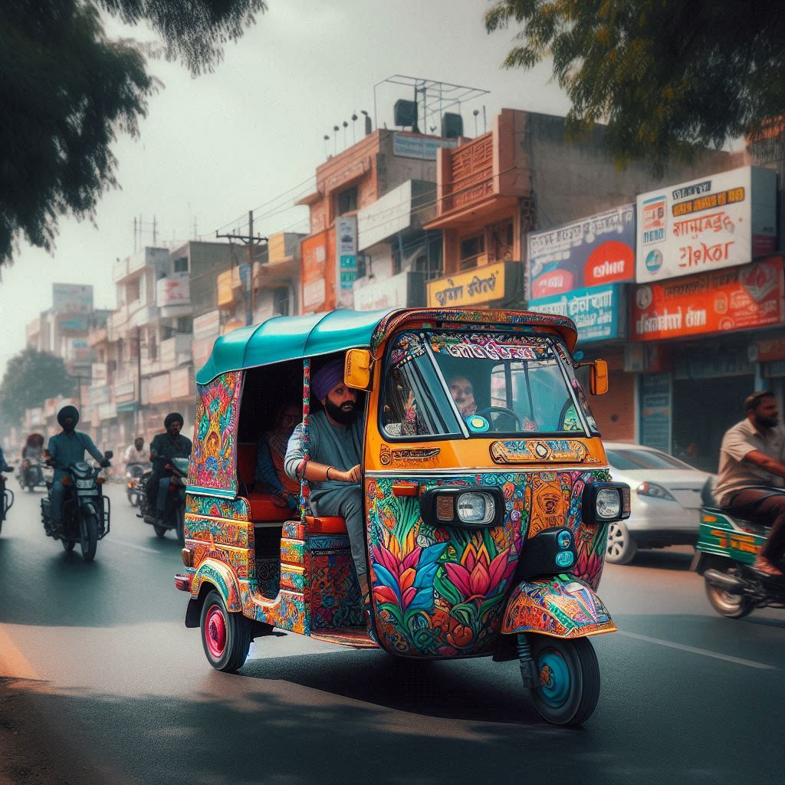
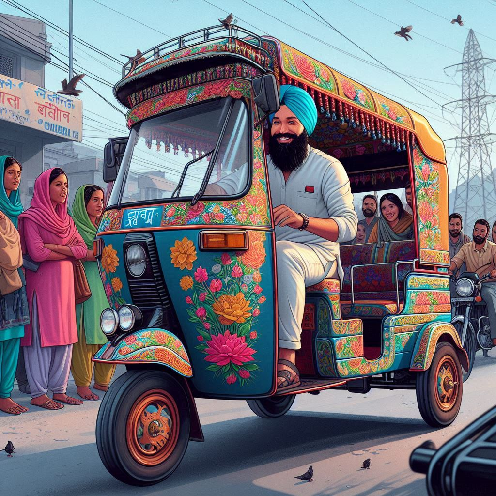

Chandigarh boasts a well-developed transportation system that facilitates easy movement within the city and
connects it to other major cities in India. Here’s an overview of the modes of transportation available in
Chandigarh:
1. Road Transport
- Buses: The Chandigarh Transport Undertaking (CTU) operates an extensive bus service covering
various parts of the city and connecting it to nearby regions. The buses are affordable and a
popular mode of transportation for daily commuters.
- Auto Rickshaws: These are widely used for short distances within the city. They are a
convenient and economical option for locals and tourists alike.
- Cycle Rickshaws: Commonly found in residential areas and markets, cycle rickshaws are an
eco-friendly option for short trips.
2. Private Vehicles
- Cars and Motorcycles: Many residents use private vehicles for daily commuting. Chandigarh’s
well-planned road network and relatively less traffic compared to other Indian cities make driving a
feasible option.
- Taxis: Taxi services, including app-based cab services like Ola and Uber, are readily
available. They provide a convenient way to travel within the city or to nearby destinations.
3. Rail Transport
- Chandigarh Railway Station: The railway station serves as an important hub, connecting
Chandigarh to various major cities in India, including Delhi, Mumbai, and Amritsar. It offers a
range of train services, including express and local trains.
4. Air Transport
- Chandigarh Airport: Located approximately 10 km from the city center, Chandigarh Airport is
an important domestic airport that connects the city to several major cities across India. The
airport offers both passenger and cargo services.


5. Bicycle and Walking Paths
- Chandigarh is known for its planned sectors and green spaces. The city has well-maintained walking
paths and cycle tracks, promoting walking and cycling as healthy modes of transport. Many residents
use bicycles for short commutes, and the city’s parks are popular spots for walking.
6. Future Developments
- The Chandigarh Administration has been focusing on enhancing public transportation facilities,
including proposals for a metro rail system to improve connectivity within the city and the
surrounding regions.
Conclusion
- Chandigarh’s transportation system is characterized by its efficiency and accessibility, catering to
the diverse needs of its residents and visitors. With a mix of public and private transport options,
the city ensures seamless connectivity while promoting eco-friendly alternatives. The well-planned
infrastructure and ongoing developments further enhance Chandigarh’s reputation as a modern urban
center in India.